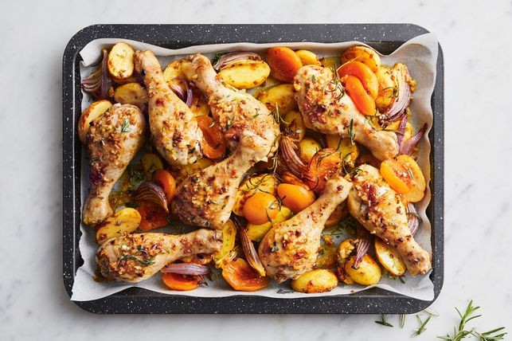

One-pan creamy chicken and bacon
An easy delicious mid-week dinner

15-minute cheese and pepper pasta
Super easy and cheesy vegeterian pasta

Easy canned tuna nachos
An easier nachos with canned tuna and avocados

Apricot chicken tray
A classic family favorite apricot chicken
